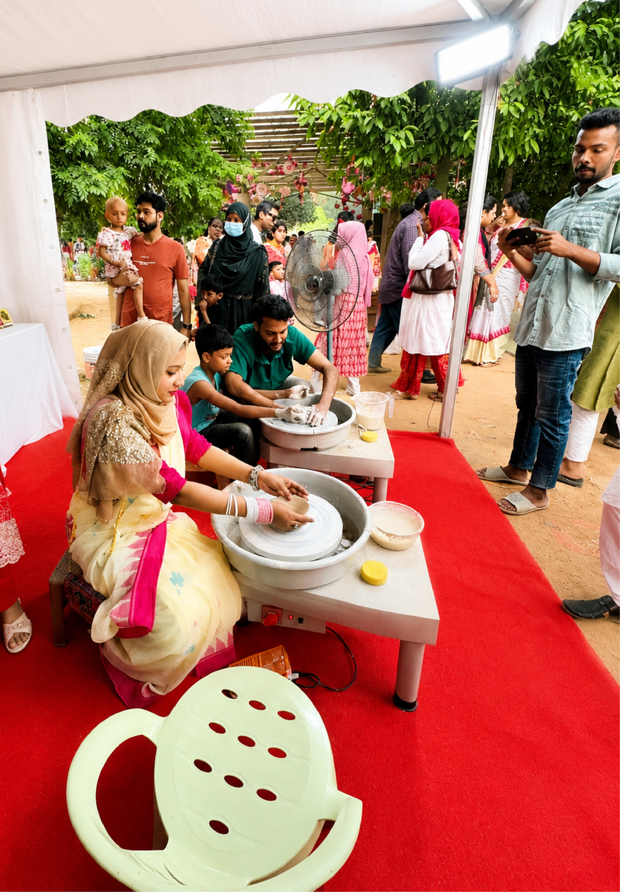
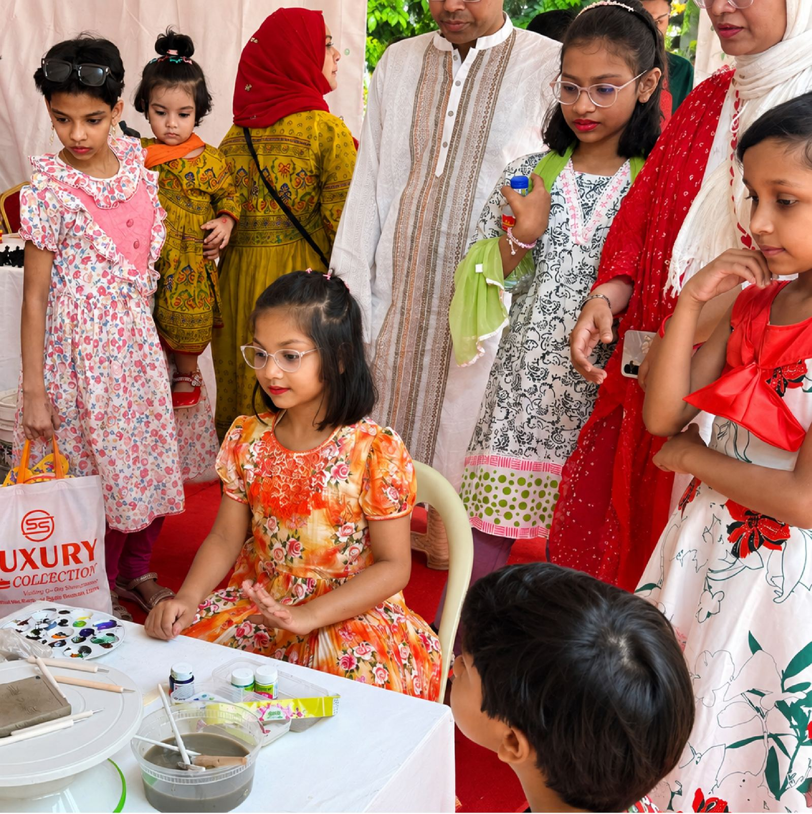
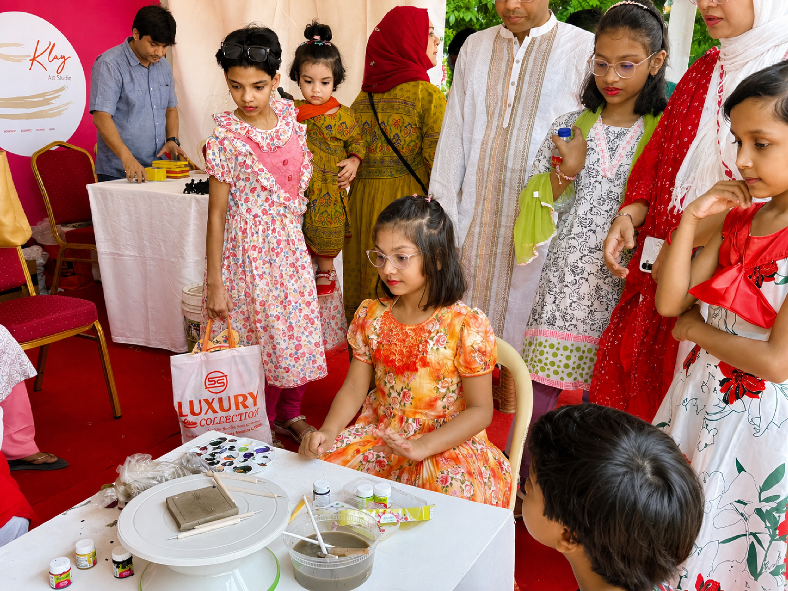
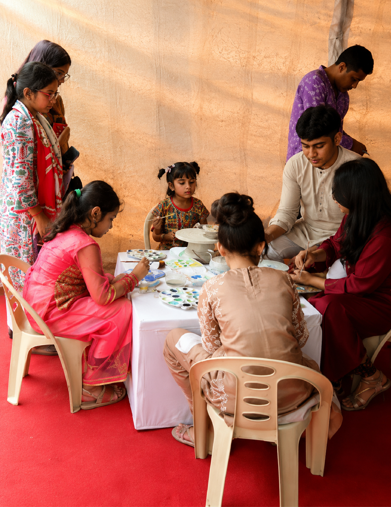

The Boishakh Festival





Each spring, the Institute of Architects Bangladesh gathers the city for Boishakh, the Bengali new year. This year, Klay Art Studio was asked to bring the wheel. For an afternoon at the IAB Centre, children and their families sat with clay for what was, for many of them, the first time.
Some left with a small pot they had turned themselves, still slightly lopsided in the way a first attempt always is. All left with clay still under their nails, and a photograph or two to prove it.
Klay Art Studio's thanks go to the Institute of Architects Bangladesh, for the invitation and the space to work in.